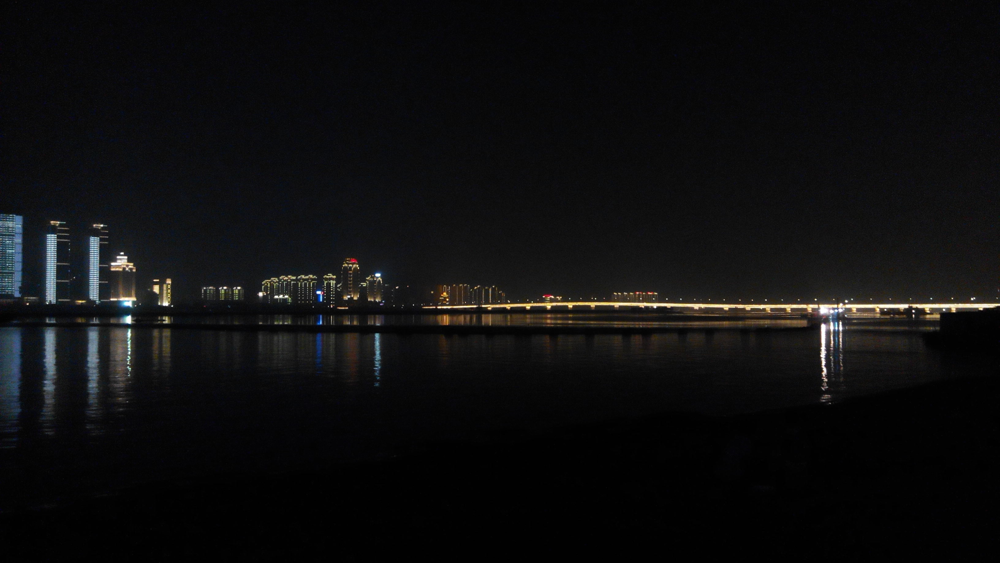
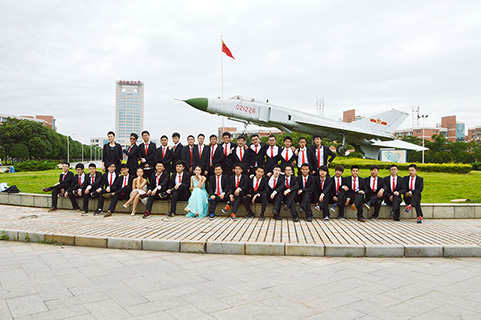
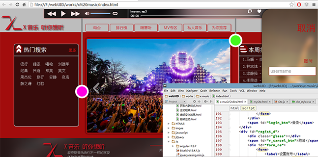

>>>2011...
这张照片是我刚进入大学时，在南昌的赣江边上拍的。那时候一切都很美好，就像这张夜景一样美。高中时向往已久的大学生活已已经拉开序幕。大一的时候对一切都充满好奇。那时我就听说了Photoshop这个软件，直到下学期可以带电脑了，我就自学photoshop，也很快就上手了，但是与当时专业不对口，ps也就很少用。不过自从大家知道了我会ps后，偶尔会找我p个图，四年下来，我的PS技能也提升了不少。而且，也是在那个时候我第一次接触了css，却因为css中的盒子模型不好理解，而放弃了。现在真正学过CSS，HTML之后想想，也许是那个时候的状态太轻松了。
...2015<<<
2015年的夏天，我们南昌航空大学网络工程专业全体同学合影留念，因为我们毕业了。那天的天气很闷，但丝毫没有影响大家的心情，因为他们做了很多平时没做过的事，摆了很多没摆过的姿势。充满了激情与基情。但时光很快，快到我们还没思考自己的未来，很多同学毕业后的工作还没有着落的，与其说是时光飞逝，倒不如是自己太过放纵了时间。这四年没能给自己定好位，毕业后的迷茫也是必然的。毕业之后，通过校招去了深圳一家公司做网络运维，也就是我们常听到的400热线。
>>>2016...
最近自编自导这样一个音乐网站。
一个月前，我辞掉我毕业后的第二份工作，这两份工作都是网络工程师。辞掉这份工作前的一个月，我就开始准备前端的学习，先是下了本html的电子 书，打算边上班边学，看到曾经的css，有种故友相逢的感觉，兴趣油然而生。但好景不长，接下来频繁的出差上班，已经让我没有时间去学习了，边上班边学习的算盘打不了了，于是在一个月内我辞掉了那份工作。辞掉之后立马就开始了我的前端修炼之路。计划是先学好html,css以及js,打好基础。不过一个月以来，学习了很多东西，但是自学的缺点就是学不精，如果能进入工作状态的学习，我相信我能学得更快，也能更好更早的服务于公司，希望贵司能给予一个面试学习的机会！